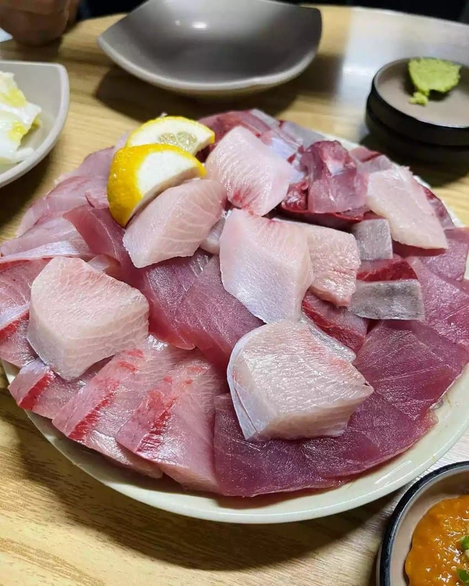

gold price defence인줄 알았네...
참치 먹어라
저정도 값을 줄 횟감은 아니던데 ㅋㅋㅋ
장인어른 노량진수산시장에서 횟집 하시는데 들어오는 단가는 너무 비싸고 객단가 올리는건 한계가있어서 단골한테만 전화돌리고 판매하고 안하신다더라
그돈으로 방어먹을 바에 참치먹는게 낫지
5년전에는 찾아먹었는데 요즘은 너무 바이럴만돼서 대방어라 해놓고 짜바리 잡아 팔고 맛도 없어서 걍 광어 우럭 먹는게 더 맛있음
이것저것 다 먹어도 광어만한게없음 그냥 광어먹으면됨 광어 회뜨고 남은 서더리는 지리로 끓이면되고 진짜 지린다
ㅇㅇ
맛있는 생선은 지리가 진짜지 매운탕은 맛알못임
오죽하면 어부들도 어부지리라고 하겠음?
매운탕이 맛있었으면 어부매운이라고 했겠지.
어부매운 ㅋㅋㅋㅋㅋㅋㅋㅋㅋㅋ
방어가 옛날에는 그냥 그런 생선중 하나였다고 하는데 바이럴 때문에 엄청 금값된거 아니냐 ㅋㅋㅋ
과대평가생선 원투탑 방어, 전어
제철 미터급 대방어로 먹어도 잘쳐줘야 냉동 참치 수준
먹어본 회 중에 최고는 전갱이였음. 진짜 초장없이 먹어도 고소하고 감칠맛이라는게 느껴짐
기름소금+간마늘 살짝 찍어먹으면 최고야
옆에 고등어회랑 같이 먹었는데도 고등어회는 별로 안먹고 나중에 걍 구워먹음
진짜 전갱이는 뭘 먹어도 ㅈㄴ 맛있긴하더라
방어는 그냥 참치는 비싸고 비슷한 맛좀 보고싶을때나 먹던 그냥 그런 회임
저렇게 난리난리 찾아먹을정도는 아니다
저정도 가격이면 그냥 참치먹어 참치
난 그냥 참치 삼치 밀치 먹을래
ㅅㅂ 슬슬 밀치도 1~2년전부터 바이럴 타던데 무섭다
gold 값을 방어하기 위한 전쟁이라는줄 알았네
나도 ㅋㅋㅋㅋㅋ
이거 작년영상일텐데
회 먹을 때 가장 눈탱이 맞기 좋은 게 방어
빅게임가면 삼치방어 최소 10단위는 잡는데 회를 안좋아해서 삼치나 한두번 구이용으로 들고가고 방어는 싹다 나눠주거나 방생하는데 아깝긴해 ㅋㅋㅋㅋ